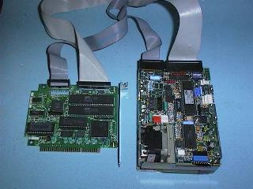

Phil Storrs PC Hardware book
Hard disk drive interfaces
Hard disk Drives require Interface circuitry to interface the Drive to the computers bus.
Three standard Hard Disk Drive interfaces have been used with DOS Computers over the years. The SCSI Interface, a universal interface, is also used to connect Hard Disk Drives to DOS Computers, but it's use has mainly been limited to high capacity File Servers and powerful Work Stations. The Hard Disk Drive Interface is often referred to as the Hard Disk Drive Controller.
In earlier hardware, the Hard Disk Drive Interface was provided by an interface card plugged into a bus slot on the system board. Modern DOS computers have the Hard Disk Drive Interface built into the system board, along with the Floppy Drive Interface and the Parallel and Serial I/O Ports.
The ST506 Hard Disk Drive Interface
The first Hard Disk Drive Interface used with DOS Computers was called the ST506. An alternative name was the ST412 Interface. These two names came from the type numbers of the first Hard Disk Drives used with PC Computers. The ST506 interface used two cables between the Drive and Interface card. One cable had 34 conductors, the other 20 conductors, and both used Edge Connectors on the Drive end.
| ST506 Interface cards were available for both PC/XT (8 Bit bus) and PC/AT (16 Bit bus) Computers. The 8 Bit bus Computers did not have support for Hard Disk Drives built into the BIOS ROM and so a BIOS Extension ROM was required to add Hard Disk Drive support. This was located on the Hard Disk Drive Interface card and was addressed in the memory space, starting at address C8000hex. With ST506 interface Hard Disk Drives, the Disks organisation (cylinders/sectors/sides) is important to the Interface card. The cards are either built for one particular Drive organisation, or they have jumpers or DIP switches to select the Drive parameters. Some of the last ST506 interface cards had a nonvolatile RAM that stored the Drives parameters and usually had a list of Drives to choose from when entering the low level format routine. |
 |
Most of the BIOS extension ROMs on 8 bit ST506 Hard Disk Drive interface cards usually provided a routine for performing a low level format on the Drive. This routine was accessed via DEBUG using Debugs "GO" command. The start address of this routine depends on the brand of Interface card. Most common addresses were G = C800:5, C800:CCC and C800:6. (See Segment and Offset addressing for details of what C800:5 means)
NOTE: Real IBM Hard Disk Drive Interface cards did not have a low level format routine built in, you had to use IBMs (or someone else) disk based low level format routine.
I/O resources used by ST506 Hard Drive interfaces in early PC hardware
| The PC/XT (8 bit bus) utilised |
The PC/AT (ISA bus) utilised |
|---|
| Hardware interrupt - IRQ 5 |
Hardware interrupt - IRQ 14 |
| I/O port addresses 320-32F |
I/O port addresses 1F0-1F8 |
| DMA channel 3 |
DMA channel - none |
BIOS support provided by BIOS Extension ROM
on the Interface card at memory address C8000 |
BIOS support provided by the BIOS ROM
on the System Board |
MFM and RLL Recording Methods - The ST 506 Interface can use two alternative data recording methods
- MFM provides 17 Sectors per Track.
- RLL provides 25 to 27 Sectors per Track.
RLL provided a 50% increase in storage capacity at the expense of some error checking. Hard Disk Drives for use with RLL Interface cards had to be of better quality with closer tolerance on rotational speed and long term stability. Using non RLL approved Drives on RLL Interface cards earned the RLL technology a bad name, as the Drives worked for a while but sooner or later they started to produce read errors and eventually may have failed altogether.
The ST506 Interface used two ribbon cables between the Interface and the Drive, with edge connectors on the Drive end. These cables were a 34 conductor cable and a 20 conductor cable.
When two Hard Disk Drives were required with the ST506 interface, the 34 pin cable was Daisy Chained to both Drives, and each Drive had its own 20 Pin cable. If you look at an ST506 Interface card you will see one 34 pin header connector and two 20 pin header connectors. The Drives must be set to be First or Second Drive and jumpers are provided on the Drives, for Drive selection. In a two Hard Disk Drive set up, the Drives could be selected in two ways:
- By using a straight 34 Pin cable and selecting one Drive as the first Drive and the other as the second Drive. (Select Drives using the jumpers on the Drive) Some drives label the jumpers as 0 and 1, others as 1 and 2.
- By using a 34 Pin cable with a Twist in it and selecting both Drives as either first or second Drive. The twist transposes the Drive select lines. Only a few Interface card manufacturers supplied the 34 wire cables with a twist in them, most provided plain cables and expected the installer to set one Drive as the first Drive and the other Drive as the second drive. This technique was left over from the way IBM designed the Floppy Disk Drive cable. The ST506 cable with a twist, is quite different to the Floppy Drive cable
Note:- Both Floppy Disk Drives, and ST506 and ESDI Hard Disk Drives use a 34 wire Interface cable. The 34 wire cables used on Floppy Disk Drives and on ST506 Hard Disk Drives are not the same. The Floppy Disk Drive cables used by IBM, and also by most DOS Computer manufacturers, have a twist in the cable between pin 10 and pin 16 that transposes the Drive select lines. A few manufacturers supplied Hard Disk Drive Interface cables with a twist but the twist was on the other side of the cable, between pins 25 and 29. This was not common.
ISA Bus(16 bit) ST506 Hard Disk Drive Interface cards
The AT type Computer was built with support for Hard Disk Drives built in and did not require a BIOS Extension ROM on the Hard Disk Drive Interface card. Later generations of DOS computers have followed this procedure. The drive organisation details are stored in a battery backed-up RAM situated on the System Board. This RAM is called the CMOS and holds all of the computers setup details, how much RAM, what type of Floppy Disk Drives are installed, what type of Hard Disk Drives are installed, what type of Video card is in use and many other scraps of information.
16 BIT Bus interface cards are identified by having an ISA bus connector rather than the old eight bit (PC/XT) bus connector. Remember the ISA bus has an extra 36 pin edge connector on the end of the 62 pin eight bit bus connector. The 36 pin edge connector provides the extra Data lines (D8 to D15), the extra Address lines (A20 to A23) and extra IRQ and DMA lines, required by the ISA bus.
An 8 bit bus interface card could be used in an ISA Bus computer but we had to tell the computers CMOS setup that the computer has no Hard Disk Drive. This is because the BIOS extension ROM on the 8 BIT bus card provided Hard Disk Drive support instead of the computers own built in BIOS.
The ESDI Interface
This Hard Disk Drive Interface used the same drive cables as the ST506 but achieved more sectors per track by using advanced signal processing techniques. ESDI Drives had 35 or more sectors per track. ESDI has been used for high capacity Drives (200 to 1000 Meg). ESDI Drives were usually supplied paired with a Interface card and with the low level format already in place.
Drive terminations
Drive terminations were required on ST506 and ESDI Hard Disk Drives and when two Hard Disk Drives were fitted, the terminators usually had to be removed from the second Drive. As no standards are followed in this, you had to consult the manufacturers specification sheets for the particular Drives involved.
The ST506 and ESDI interfaces had a lot of the signal processing electronics on the Interface card but with the ever increasing scale of circuit integration, it became possible to put this on the Hard Disk Drive itself, and to use a very simple Hard Disk Drive Interface.
The IDE interface
IDE stands for In-built Drive Electronics. An alternative name for this interface is the AT Attachment (ATA) Interface. The controller circuitry is built into the Hard Disk Drive itself rather than on a Interface card and the Interface card provides simple buffers and address decoding circuits to interface the Drive to the PC Ccomputers bus.
The IDE Interface uses a 40 pin ribbon cable and header connectors on the Hard Disk Drive. This cable is daisy chained when two Drives are fitted, and the Drives are selected by jumpers on the Drives as Master and Slave devices.
| You must consult the Drive manufactures documentation when installing additional Hard Disk Drives in a system with IDE Interface Drives, not all Drives follow the same standards, and some older Drives will not work with some other brand/model of Drive. Not all Drives use the same jumper configuration also. Some Drives were built without Master/Slave jumpers and cannot be used in a two Hard Disk Drive setup. Most modern Drives have diagrams of the jumper configurations on the top of the Drive.
Today an Enhanced IDE (EIDE) standard has been introduced that overcomes the 528 MByte limit imposed by the Int 13 routine, provides much faster data transfer rates and allows for the connection of CDROM, Tape Backup and high capacity Removable Media Drives. |
 |
I/O Resources
All three types of Interface cards (ST506, ESDI and IDE) use the same I/O address and Interrupt Request line. This has meant only one Primary Interface card can be installed in a PC Computer. The EIDE Interface specifications has made use of Secondary addresses that were assigned to a Secondary Hard Disk Drive Interface but never implemented with the ST506 or ESDI Interfaces.
The EIDE standard has also added two more EIDE I/O channels and these are called the Tertiary channel and the Quaternary channel. See the IRQ and I/O notes for details of the resources assigned to these devices.
The SCSI (pronounced SCUZZI) Interface
SCSI stands for Small Computer System Interface and it can be used to connect Hard Disk Drives to a PC Computer. The SCSI interface is the standard Hard Disk Drive Interface for the APPLE MAC but it is not often used with DOS Computers. The most common use of SCSI Hard Disk Drives on DOS computers is in Network File Servers. Techniques called RAID, Mirroring and Striping, are used to provide very large secure disk storage and a SCSI interface is used to implement these technologies. The SCSI interface can be used to interface to other storage or I/O devices. These include: Tape Backup, CDROM and, high capacity Removable Media Drives, and some times, Optical Scanners and Printers.
The eight bit SCSI Interface uses two types of Interface cable:
- External devices are connected via a special Centronics like 50 pin connector, the computer end of the external cable usually has a DB25P connector that goes into a DB25S connector on the interface card. Two important point to remember when connecting older SCSI Interfaced devices:
- Check the pin configuration on the connectors because no one standard exists.
- The DOS computers parallel printer interface also uses a DB25S connector and if a parallel printer is plugged into the SCSI socket the SCSI I/O port may be destroyed.
- Internal SCSI devices are connected via a 50 pin ribbon cable and header connectors.
Line terminators are important on SCSI cables both ends of a SCSI chain must be terminated.
The SCSI Interface will be covered in more detail in PC Servicing two.
Enhanced IDE and Fast-ATA
To overcome the limits imposed on Hard Disk Drive size by the various factors outlined in this document, Hard Disk Drive and controller manufacturers have adopted a series of new standards. Although you see it advertised by different names, sometimes generally referred to as simply Enhanced IDE, there are actually two standards, Enhanced IDE and Fast AT Attachment. Fortunately for us, the two work effectively the same.
Enhanced IDE and ATA are changing all the rules.
Maximum Hard Disk Drive size is now 8.4 GByte, the maximum number of EIDE Interface devices is now four, and the maximum transfer rate is in excess of 32 MByte/sec. The ATA Packet Interface (ATAPI) allows for CDROM Drives, and other specifications provide for Tape Backup Drives and high capacity Removable Media Drives.
Enhanced IDE has changed four main elements of the old IDE specification:
- BIOS redesign to support mush higher capacity EIDE Hard Disk Drives
- Increased data transfer rates
- The implementation of multiple EIDE channels (up to four)
- Support of non-disk EIDE peripherals
You will discover much more about Enhanced IDE and ATA in PC Servicing two.
CAV, ZCAV and CLV
So far we have only looked at Hard Disk Drives having the same number of sectors per track and rotating at a constant speed. This was true in the early days of magnetic media but today three terms must be used to describe the way data may be recorded on magnetic or optical media.
Many Disk storage devices, Hard, Floppy and optical Drives, run in CAV (Constant Angular Velocity) mode. In this case, the Disk spins at a constant rate, and there are the same number of Sectors per Track on inner and outer Tracks. This means that the bits are farther apart on the outer Tracks, potentially wasting space. The transfer rate is constant, as the number of Bits/Track is same and the Time/Track does not vary. This is the way all DOS Floppy Disk Drives and older Hard Disk Drives were organized.
CDs (and video laser disks, I believe) and early Macintosh Floppy Disk Drives run at Constant Linear Velocity (CLV). That is, the bits are all roughly the same size, and the rotations per minute of the Drive is adjust as the head moves in and out. This gives the best areal density of bits, at the sacrifice of seek speed, since every seek requires an adjustment of the rotation speed. The transfer rate is constant, as the size and spacing of bits is constant and the linear velocity is constant. This is the way the audio CDs and their Computer counterparts all work.
The current rage is ZCAV, Zoned Constant Angular Velocity. Most modern Hard Disk Drives have this feature, and the newest MO (Magneto Optical) Drives do also. There are a number of Zones defined on the Disk. The number of Sectors per Track is different in each zone. Thus, the data is packed more densely than normal CAV Disks, but seek speed is not sacrificed. Another effect of ZCAV is that the media transfer rate varies depending on the head position, because the time/track is constant and the bits/track vary; for example, the Seagate ST12450W Barracuda Hard Disk Drive varies from 68 to 113 MBits/sec, almost a factor of two.
 Useful World Wide Web sites
Useful World Wide Web sites
Providing Hard drive details and technical information:-
Copyright © Phil. Storr 4th December
1998